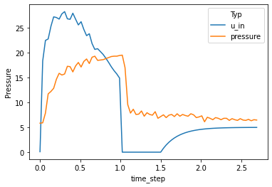
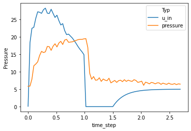
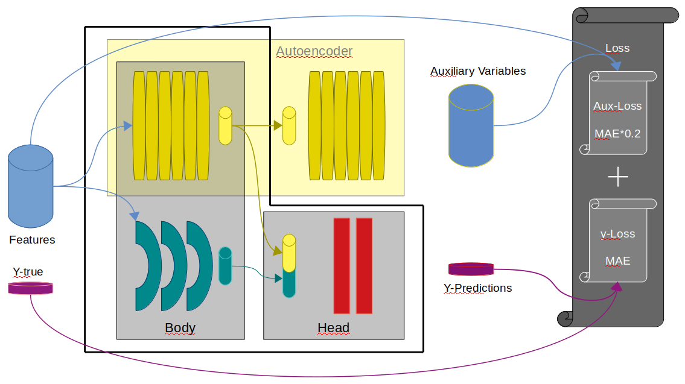
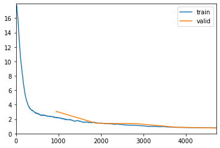

<AxesSubplot:xlabel='time_step', ylabel='Pressure'>
Johannes Tomasoni
November 22, 2021
I lately participated in the Google Brain - Ventilator Pressure Prediction competition. I didn’t score decent, but I still learned a lot. And some of it is worth to sum up, so I can easily look it up later.
The goal of the competition was to predict airway pressure of lungs that are ventilated in a clinician-intensive procedure. Given values of the input pressure (u_in) we had to predict the output pressure for a time frame of a few seconds.
<AxesSubplot:xlabel='time_step', ylabel='Pressure'>
Since all u_in values for a time frame were given we can build a bidirectional sequence model. Unless in a typical time-series problem where the future points are unknown at a certain time step, we know the future and past input values. Therefore I decided not to mask the sequences while training.
A good model choice for sequencing tasks are LSTMs and Transformers. I built a model that combines both architectures. I also tried XGBoost with a lot of features (especially windowing, rolling, lead, lag features) engineering, But neural nets (NN) performed better, here. Though I kept some of the engineered features as embeddings for the NN model.
The competition metric was mean average error (MAE). Only those pressures were evaluated, that appear while filling the lungs with oxygen.
Besides the given features, u_in, u_out, R, C and time_step I defined several features. They can by categorized as:
To reduce memory consumption I used a function from this notebook.
def gen_features(df, norm=False):
# area feature from https://www.kaggle.com/cdeotte/ensemble-folds-with-median-0-153
df['area'] = df['time_step'] * df['u_in']
df['area_crv'] = (1.5-df['time_step']) * df['u_in']
df['area'] = df.groupby('breath_id')['area'].cumsum()
df['area_crv'] = df.groupby('breath_id')['area_crv'].cumsum()
df['area_inv'] = df.groupby('breath_id')['area'].transform('max') - df['area']
df['ts'] = df.groupby('breath_id')['id'].rank().astype('int')
df['R4'] = 1/df['R']**4
df['R'] = df['R'].astype('str')
df['C'] = df['C'].astype('str')
df = pd.get_dummies(df)
for in_out in [0,1]: #,1
for qs in [0.2, 0.25, 0.5, 0.9, 0.95]:
df.loc[:, f'u_in_{in_out}_q{str(qs*100)}'] = 0
df.loc[df.u_out==in_out, f'u_in_{in_out}_q{str(qs*100)}'] = df[df.u_out==in_out].groupby('breath_id')['u_in'].transform('quantile', q=0.2)
for agg_type in ['count', 'std', 'skew','mean', 'min', 'max', 'median', 'last', 'first']:
df.loc[:,f'u_out_{in_out}_{agg_type}'] = 0
df.loc[df.u_out==in_out, f'u_out_{in_out}_{agg_type}'] = df[df.u_out==in_out].groupby('breath_id')['u_in'].transform(agg_type)
if norm:
df.loc[:,f'u_in'] = (df.u_in - df[f'u_out_{in_out}_mean']) / (df[f'u_out_{in_out}_std']+1e-6)
for s in range(1,8):
df.loc[:,f'shift_u_in_{s}'] = 0
df.loc[:,f'shift_u_in_{s}'] = df.groupby('breath_id')['u_in'].shift(s)
df.loc[:,f'shift_u_in_m{s}'] = 0
df.loc[:,f'shift_u_in_m{s}'] = df.groupby('breath_id')['u_in'].shift(-s)
df.loc[:,'perf1'] = (df.u_in / df.shift_u_in_1).clip(-2,2)
df.loc[:,'perf3'] = (df.u_in / df.shift_u_in_3).clip(-2,2)
df.loc[:,'perf5'] = (df.u_in / df.shift_u_in_5).clip(-2,2)
df.loc[:,'perf7'] = (df.u_in / df.shift_u_in_7).clip(-2,2)
df.loc[:,'perf1'] = df.perf1-1
df.loc[:,'perf3'] = df.perf3-1
df.loc[:,'perf5'] = df.perf5-1
df.loc[:,'perf7'] = df.perf7-1
df.loc[:,'perf1inv'] = (df.u_in / df.shift_u_in_m1).clip(-2,2)
df.loc[:,'perf3inv'] = (df.u_in / df.shift_u_in_m3).clip(-2,2)
df.loc[:,'perf5inv'] = (df.u_in / df.shift_u_in_m5).clip(-2,2)
df.loc[:,'perf7inv'] = (df.u_in / df.shift_u_in_m7).clip(-2,2)
df.loc[:,'perf1inv'] = df.perf1inv-1
df.loc[:,'perf3inv'] = df.perf3inv-1
df.loc[:,'perf5inv'] = df.perf5inv-1
df.loc[:,'perf7inv'] = df.perf7inv-1
df.loc[:,'rol_mean5'] = df.u_in.rolling(5).mean()
return dfThe data was transformed with scikit’s RobustScaler to reduce influence of outliers.
I didn’t do cross validation here, but instead trained the final model on the entire dataset. Nevertheless it’s helpful to build kfolds for model evaluation. I build GroupKFold over breath_id to keep the entire time frame in the same fold.
Since the data is quite small (ca. 800 MB after memory reduction) I decided to load the entire train set in the Dataset object during construction (calling __init__()). In a first attempt I loaded the data as Pandas Dataframe. Then I figured out (from this notebook) that converting the Dataframe into an numpy array speeds up training significantly. The Dataframe is converted to an numpy array by the scaler.
Since the competition metric only evaluates the pressures where u_out==0 I also provide a mask tensor, which can later on be used feeding the loss and metric functions.
class VPPDataset(torch.utils.data.Dataset):
def __init__(self,df, scaler, is_train = True, kfolds = [0], features = ['R','C', 'time_step', 'u_in', 'u_out']):
if is_train:
# build a mask for metric and loss function
self.mask = torch.FloatTensor(1 - df[df['kfold'].isin(kfolds)].u_out.values.reshape(-1,80))
self.target = torch.FloatTensor(df[df['kfold'].isin(kfolds)].pressure.values.reshape(-1,80))
# calling scaler also converts the dataframe in an numpy array, which results in speed up while training
feature_values = scaler.transform(df[df['kfold'].isin(kfolds)][features])
self.df = torch.FloatTensor(feature_values.reshape(-1,80,len(features)))
else:
self.mask = torch.FloatTensor(1 - df.u_out.values.reshape(-1,80))
feature_values = scaler.transform(df[features])
self.df = torch.FloatTensor(feature_values.reshape(-1,80,len(features)))
self.target = None
self.features = features
self.is_train = is_train
def __len__(self):
return self.df.shape[0]
def __getitem__(self, item):
sample = self.df[item]
mask = self.mask[item]
if self.is_train:
targets = self.target[item]
else:
targets = torch.zeros((1))
return torch.cat([sample, mask.view(80,1)],dim=1), targets #.float()My model combines a multi layered LSTM and a Transformer Encoder. Additionally I build an AutoEncoder by placing a Transformer Decoder on top of the Transformer encoder. The AutoEncoder predictions are used as auxiliary variables.

Some further considerations:
The model is influenced by these notebooks:
# Influenced by:
# Transformer: https://pytorch.org/tutorials/beginner/transformer_tutorial.html
# LSTM: https://www.kaggle.com/theoviel/deep-learning-starter-simple-lstm
# Parameter init from: https://www.kaggle.com/junkoda/pytorch-lstm-with-tensorflow-like-initialization
class VPPEncoder(nn.Module):
def __init__(self, fin = 5, nhead = 8, nhid = 2048, nlayers = 6, seq_len=80, use_decoder = True):
super(VPPEncoder, self).__init__()
self.seq_len = seq_len
self.use_decoder = use_decoder
# number of input features
self.fin = fin
#self.tail = nn.Sequential(
# nn.Linear(self.fin, nhid),
# #nn.LayerNorm(nhid),
# nn.SELU(),
# nn.Linear(nhid, fin),
# #nn.LayerNorm(nhid),
# nn.SELU(),
# #nn.Dropout(0.05),
#)
encoder_layers = nn.TransformerEncoderLayer(self.fin, nhead, nhid , activation= 'gelu')
self.transformer_encoder = nn.TransformerEncoder(encoder_layers, nlayers)
decoder_layers = nn.TransformerDecoderLayer(self.fin, nhead, nhid, activation= 'gelu')
self.transformer_decoder = nn.TransformerDecoder(decoder_layers, nlayers)
self.lstm_layer = nn.LSTM(fin, nhid, num_layers=3, bidirectional=True)
# Head
self.linear1 = nn.Linear(nhid*2+fin , seq_len*2)
self.linear3 = nn.Linear(seq_len*2, 1)
self._reinitialize()
# from https://www.kaggle.com/junkoda/pytorch-lstm-with-tensorflow-like-initialization
def _reinitialize(self):
"""
Tensorflow/Keras-like initialization
"""
for name, p in self.named_parameters():
if 'lstm' in name:
if 'weight_ih' in name:
nn.init.xavier_uniform_(p.data)
elif 'weight_hh' in name:
nn.init.orthogonal_(p.data)
elif 'bias_ih' in name:
p.data.fill_(0)
# Set forget-gate bias to 1
n = p.size(0)
p.data[(n // 4):(n // 2)].fill_(1)
elif 'bias_hh' in name:
p.data.fill_(0)
elif 'fc' in name:
if 'weight' in name:
nn.init.xavier_uniform_(p.data,gain=3/4)
elif 'bias' in name:
p.data.fill_(0)
def forward(self, x):
out = x[:,:,:-1]
out = out.permute(1,0,2)
out = self.transformer_encoder( out)
out_l,_ = self.lstm_layer(out)
if self.use_decoder:
out = self.transformer_decoder(out, out)
out_dec_diff = (out - x[:,:,:-1].permute(1,0,2)).abs().mean(dim=2)
else:
out_dec_diff = out*0
out = torch.cat([out, out_l], dim=2)
# Head
out = F.gelu(self.linear1(out.permute(1,0,2)))
out = self.linear3(out)
return out.view(-1, self.seq_len) , x[:,:,-1], out_dec_diff.view(-1, self.seq_len) The competition metric was Mean Absolute Error (MAE), but only for the time-steps where air flows into the lunge (approx. half of the timesteps). Hence, I masked the predictions (using the flag introduced in the Dataset) ignoring the unnecessary time-steps. The flags are passed through the model (val[1]) and is an output along with the predictions.
Thee values produced by the AutoGenerater are additionally measured by the vppGenMetric. It uses MAE to evaluate how good the reconstruction of the input features values evolves.
The loss function is a combination of L1-derived-Loss (vppAutoLoss) for the predictions and the AutoEncoder-predictions.
Due to this discussion I did some experiments with variations of Huber and SmoothL1Loss. The later (vppAutoSmoothL1Loss) performed better.
def vppAutoLoss(val, target):
gen =val[2]
flag = val[1]
preds = val[0]
loss = (preds*flag-target*flag).abs() + (gen*flag).abs()*0.2 #
loss= loss.sum()/flag.sum()
return loss
# Adapting https://pytorch.org/docs/stable/generated/torch.nn.SmoothL1Loss.html#torch.nn.SmoothL1Loss
def vppAutoSmoothL1Loss(val, target):
beta = 2
fct = 0.5
gen =val[2]
flag = val[1]
preds = val[0]
loss = (preds*flag-target*flag).abs() + (gen*flag).abs()*0.2
loss = torch.where(loss < beta, (fct*(loss**2))/beta, loss)#-fct*beta)
# reduction mean**0.5
loss = loss.sum()/flag.sum() #()**0.5
return loss
The training was done in mixed precision mode (to_fp16()) to speed up training. As optimizer I used QHAdam. The best single score I achieved with a 100 epoch fit_one_cycle (CosineAnnealing with warmup). I also tried more epochs with restart schedules fit_sgdr and changing loss functions. But the didn’t do better.
learn = Learner(data,
VPPEncoder(fin = len(features), nhead = 5, nhid = 128, nlayers = 6, seq_len=80, use_decoder = True),
opt_func= QHAdam,
loss_func = vppAutoLoss, #vppAutoSmoothL1Loss
metrics=[vppMetric, vppGenMetric],
cbs=[ShowGraphCallback()]).to_fp16()
learn.fit_one_cycle(EPOCHS, 2e-3) | epoch | train_loss | valid_loss | vppMetric | vppGenMetric | time |
|---|---|---|---|---|---|
| 0 | 2.204789 | 3.071832 | 2.759562 | 1.561353 | 02:33 |
| 1 | 1.472645 | 1.427370 | 1.147190 | 1.400903 | 02:34 |
| 2 | 1.130861 | 1.373204 | 1.108116 | 1.325440 | 02:32 |
| 3 | 0.864211 | 0.880435 | 0.627816 | 1.263098 | 02:32 |
| 4 | 0.788929 | 0.765516 | 0.516083 | 1.247169 | 02:37 |

Th CV score after 100 epochs is 0.227013 for vppMetric and 0.255794 for vppGenMetric. Leaderboard scores for this singele model training in the entire train-dataset were 0.2090 private LB and 0.2091 public LB.